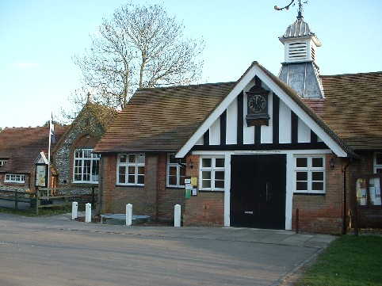
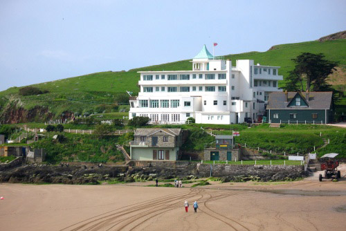
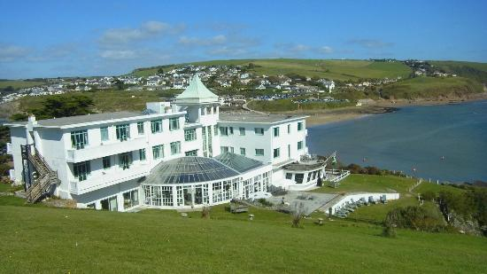
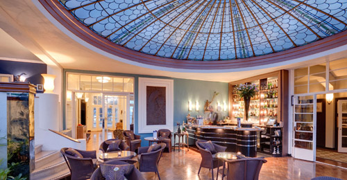
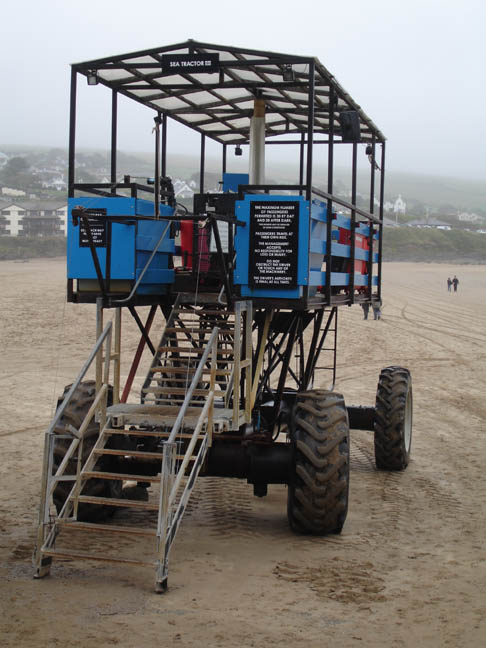
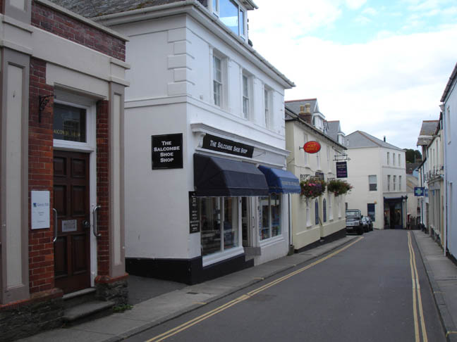

Hambleden Church, Buckinghamshire - as the church in 'Blackridge'. (Also featured in 'Sad Cypress' and 'Mrs McGinty's Dead').

Frieth Village Hall, Buckinghamshire - where the Coroner's Court convenes in 'Blackridge'.

The Burgh Island Hotel used as 'The Sandy Cove Hotel' - the location where Agatha Christie wrote the book.

Burgh Island Hotel - view back over Bigbury-on-Sea.

Burgh Island Hotel - bar area.

The Sea Tractor on which Poirot is reluctant to travel.

Fore Street in Salcombe, South Devon - actually some distance away but made to look like it was opposite Burgh Island. Lloyds Bank is used as the 'Library'. Salcombe was also used in 'Peril at End House'.